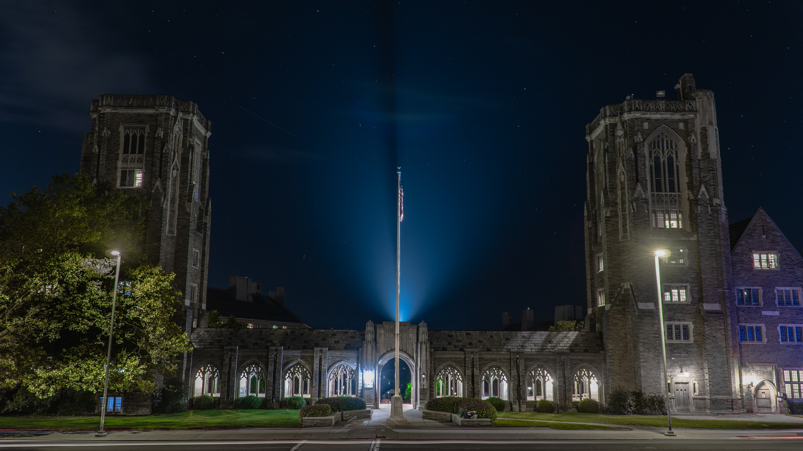
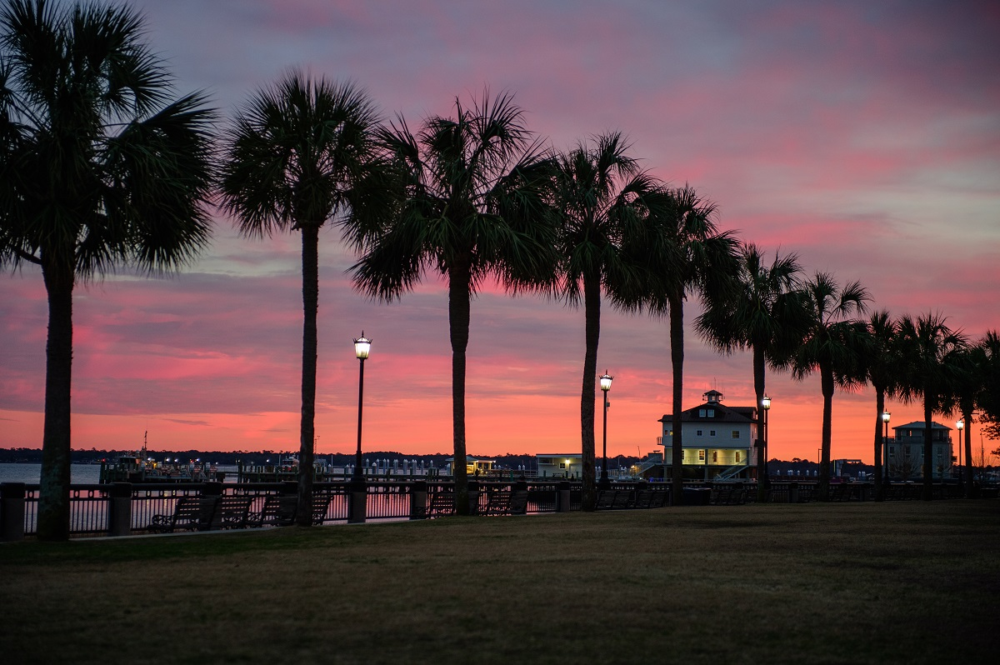
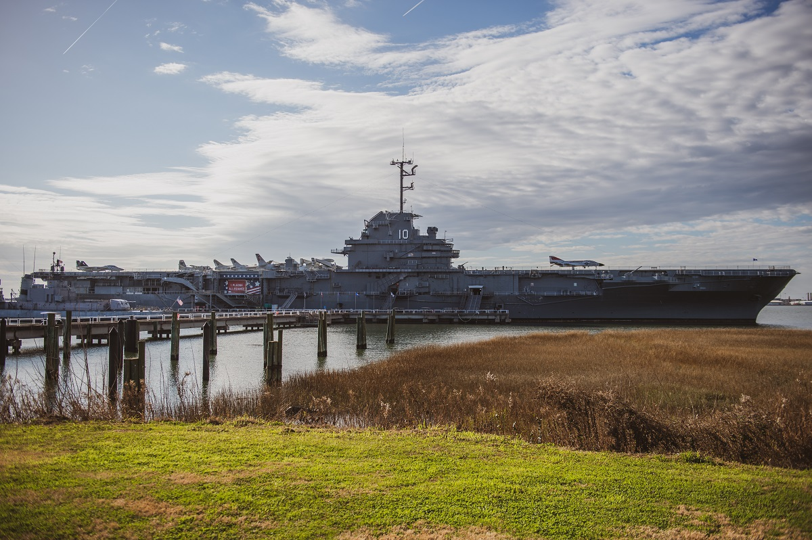

Ivan Gong's Photo Gallery
Here are some of my best photos selected.

War Memorial at Lyon and McFaddin Halls in Cornell, Ithaca.
Camera Info
- Camera: Sony a6400
- Lens: Sony 18-105mm PZ
- Shutter Speed: 20s
- ISO: 100
- Focal Length: 18mm
United States Custom House in Charleston.
Camera Info
- Camera: Nikon D4S
- Lens: Nikon 24-70mm f2.8
- Shutter Speed: 1/25s
- ISO: 2500
- Focal Length: 38mm
NYPD in Times Square, New York.
Camera Info
- Camera: Sony a6400
- Lens: Sony 18-105mm PZ
- Shutter Speed: 1/200s
- ISO: 250
- Focal Length: 105mm

Beautiful sunset in Charleston.
Camera Info
- Camera: Nikon D4S
- Lens: Nikon 24-70mm f2.8
- Shutter Speed: 1/125s
- ISO: 1250
- Focal Length: 70mm

USS Yorktown aircraft carrier (converted to a museum).
Camera Info
- Camera: Nikon D4S
- Lens: Nikon 24-70mm f2.8
- Shutter Speed: 1/2000s
- ISO: 100
- Focal Length: 32mm
The water in Cascadilla Fall splash on a leaf.
Camera Info
- Camera: Nikon D4S
- Lens: Nikon 70-200mm f2.8
- Shutter Speed: 1/6400
- ISO: 6400
- Focal Length: 200mm